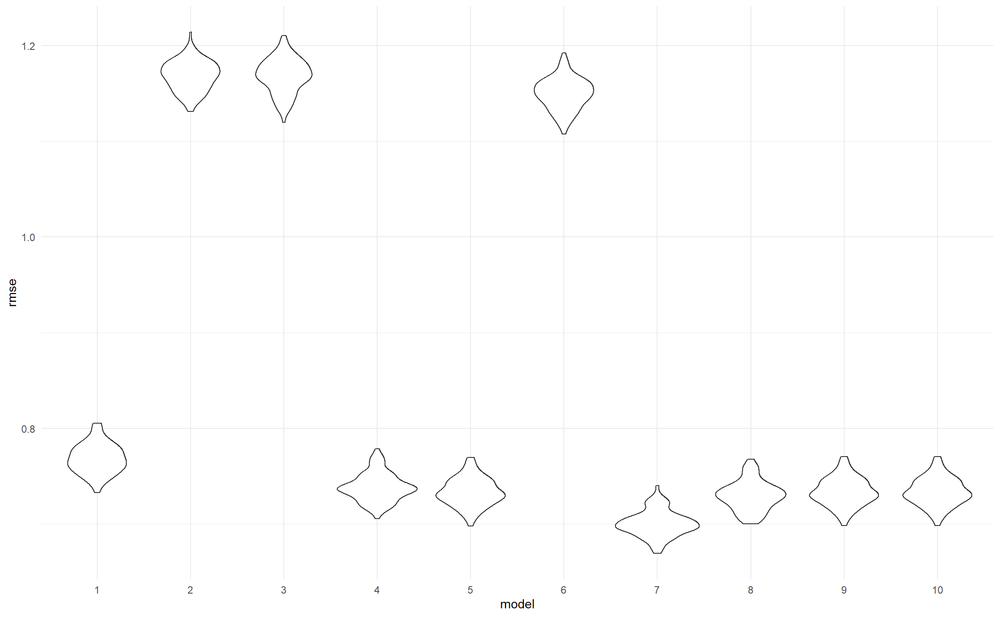

Regression
Xiaoyang Li & Jingyu Fu
Finding the passcode of Happiness
One of the key motivation of finding the secrets of Happiness is to find its passcode to it. With this passcode, we can unlock a lot of door in the world of hapiness. We can see what are the factors that constructed our satisfaction about life; how can we boost our hapiness; we can even predict our future hapiness with this passcode.
How we locate the potential numbers that construct the passcode?
The debate of whether higher gdp can increase hapiness is never endless. Some say it does, thus we should work hardly on raising gdp. Some say it actually has a quite opposite influence on our hapiness. Which opinion is true according to our data? We choose gdp as one of the potential key variables to find the association.
Also, humans are an extremely prosocial species. Compared to most primates, humans provide more assistance to family, friends, and strangers, even when costly. Some evidence indicate that there is well-being benefits from donating money.
Moreover, according to our previous exploration, we can tell that there is an obvious association between age and happiness.
Both related to money, what’s the association between these two variable and happiness? To answer this question, we use the following three variables to find the best linear model that describes the association.
happiness represent the happiness score or subjective well-being which was measured by the Gallup World Poll(GWP) covering years from 2005 to 2018,
gdp represent the log transformation of statistics of GDP per capita in purchasing power parity(PPP) at constant 2011 international dollar prices are from the November 14,2018 update of the World Development Indicators (WDI).
generosity is the residual of regressing national average of response to the GWPquestion “Have you donated money to a charity in the past month?” on GDP per capita.
Which model is the closest to the ‘true passcode’?
We built 10 potentilas models
Model 1 to 3 use each of the three variables as the only variable.
lm1:\[Y_{happiness} = \beta_0 + \beta_1X_{gdp}\]
lm2:\[Y_{happiness} = \beta_0 + \beta_1X_{generosity}\]
lm3:\[Y_{happiness} = \beta_0 + \beta_1X_{age}\]
Model 4 to 7 use two or three of the three variables as combination(confounder).
lm4:\[Y_{happiness} = \beta_0 + \beta_1X_{gdp} + \beta_2X_{generosity}\]
lm5:\[Y_{happiness} = \beta_0 + \beta_1X_{gdp} + \beta_3X_{age} \]
lm6:\[Y_{happiness} = \beta_0 + \beta_1X_{age} + \beta_2X_{generosity} \]
lm7:\[Y_{happiness} = \beta_0 + \beta_1X_{gdp} + \beta_2X_{generosity} + \beta_3X_{age} \]
Model 8 to 10 use interaction of those variables.
lm8:\[Y_{happiness} = \beta_0 + \beta_1X_{gdp} * \beta_2X_{generosity}\]
lm9:\[Y_{happiness} = \beta_0 + \beta_1X_{gdp} * \beta_3X_{age} \]
lm10:\[Y_{happiness} = \beta_0 + \beta_1X_{age} * \beta_2X_{generosity} \]
Now let’s find out the best model!
We will use several criterias to find our best model.
The first criteria we use is adjusted r square, which tells us the goodness of fit of a model. Higher the value, better the goodness of fit. Model 7 has the highest value, following are model 8 and 5.
The second set of criterias we use are AIC and BIC, which tell us the quality of our model. Lower the value, higher the quality. Model 7 has the lowest AIC and BIC value, following are Model 8 and Model 4.
| model_name | r.squared | adj.r.squared | sigma | statistic | p.value | df | logLik | AIC | BIC | deviance | df.residual |
|---|---|---|---|---|---|---|---|---|---|---|---|
| lm1 | 0.5797524 | 0.5796624 | 0.7678225 | 6435.59979 | 0 | 2 | -5388.180 | 10782.360 | 10801.70 | 2750.257 | 4665 |
| lm2 | 0.0304221 | 0.0302106 | 1.1682986 | 143.83058 | 0 | 2 | -7219.597 | 14445.195 | 14464.49 | 6256.801 | 4584 |
| lm3 | 0.0303123 | 0.0299012 | 1.1683498 | 73.74202 | 0 | 3 | -7431.860 | 14871.720 | 14897.56 | 6440.265 | 4718 |
| lm4 | 0.6137137 | 0.6135452 | 0.7375042 | 3640.62922 | 0 | 3 | -5109.391 | 10226.781 | 10252.50 | 2492.751 | 4583 |
| lm5 | 0.6172381 | 0.6169919 | 0.7329354 | 2506.50308 | 0 | 4 | -5170.159 | 10350.317 | 10382.56 | 2504.937 | 4663 |
| lm6 | 0.0615510 | 0.0609365 | 1.1496420 | 100.17470 | 0 | 4 | -7144.772 | 14299.543 | 14331.70 | 6055.923 | 4582 |
| lm7 | 0.6521689 | 0.6518652 | 0.6999853 | 2147.29618 | 0 | 5 | -4868.943 | 9749.886 | 9788.47 | 2244.595 | 4581 |
| lm8 | 0.6230552 | 0.6228084 | 0.7286117 | 2524.54204 | 0 | 4 | -5053.258 | 10116.516 | 10148.67 | 2432.469 | 4582 |
| lm9 | 0.6172756 | 0.6168650 | 0.7330567 | 1503.49499 | 0 | 6 | -5169.931 | 10353.861 | 10399.00 | 2504.692 | 4661 |
| lm10 | 0.0687907 | 0.0677741 | 1.1454489 | 67.66717 | 0 | 6 | -7127.014 | 14268.027 | 14313.04 | 6009.204 | 4580 |
Obtaining our best model.
Obviously, Model 7 wins in all the criterias.
Therefore, I would like to choose the lm7, i.e. \[Y_{happiness} = -1.39 + 0.77X_{gdp} + 1.36 X_{generosity} + (-0.36)I(age=30-49) + (-0.57)I(age = 50 +)\]
Summary results of lm7 are shown below:
##
## Call:
## lm(formula = ladder ~ gdp + generosity + age, data = df)
##
## Residuals:
## Min 1Q Median 3Q Max
## -2.58854 -0.46163 0.01775 0.49240 2.12936
##
## Coefficients:
## Estimate Std. Error t value Pr(>|t|)
## (Intercept) -1.406986 0.082464 -17.06 <2e-16 ***
## gdp 0.776230 0.008801 88.20 <2e-16 ***
## generosity 1.358307 0.063953 21.24 <2e-16 ***
## age30-49 -0.357256 0.025237 -14.16 <2e-16 ***
## age50+ -0.566644 0.025475 -22.24 <2e-16 ***
## ---
## Signif. codes: 0 '***' 0.001 '**' 0.01 '*' 0.05 '.' 0.1 ' ' 1
##
## Residual standard error: 0.7 on 4581 degrees of freedom
## (135 observations deleted due to missingness)
## Multiple R-squared: 0.6522, Adjusted R-squared: 0.6519
## F-statistic: 2147 on 4 and 4581 DF, p-value: < 2.2e-16Hooray! Now we have obtained the passcode of Happiness!
Before we continue, there’s couple of more things we want to check with our passcode.
Does it work well?
According to the plot above, RMSE of lm7 is the lowest, which show that lm7 work best among all our linear model to fit test data!

Does it fulfill our assuamption?
We made some assumptions regarding residuals like normality distribution and constant variance of residuals. According to the diagnostic above, residuals vs fitted and scale-location indicate the constant variance of residuals is satisfied. QQ plot demonstrate residuals follow normal distribution. And the residuals vs leveragge prove there are no obvious influencial observation in out dataset.

So glad to see that our model got such a high score in those questions, now let’d officially meet our best model!